|
|
HELP FIND THE FOLLOWING LOCATIONS
PAGE 17
DANGER MAN: The Sanctuary (Charles Frend: 1959)Unknown 1- Drake is driven, in the governor’s Humber, through the grounds of Hartington Open Prison to meet Michael Liamond who is working in one of the prison's greenhouses (they arrive at the M-G-M Studio's greenhouses).
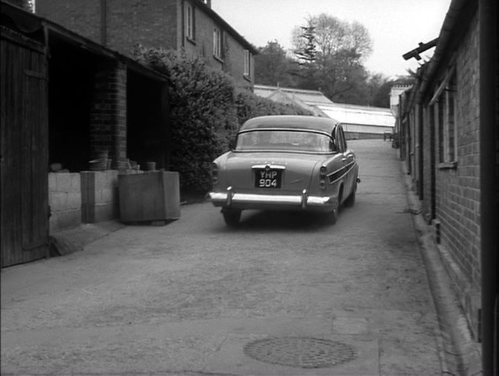
DANGER
MAN: The Hunting Party (Pat Jackson: 1965)
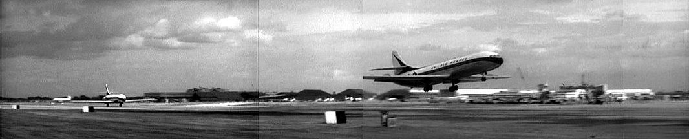
Unknowns 2 to 3 – Establishing shots of the Loire where the Jordans have their chateau.
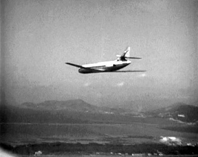
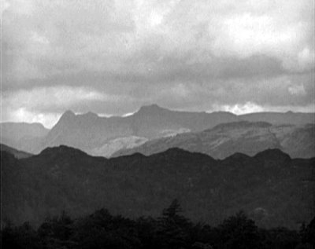
'Yakymour', Le Cannet, Côte D’Azur, France: the grounds of the Jordans' chateau.
(Identified by Geoff Dodd, January 2022)
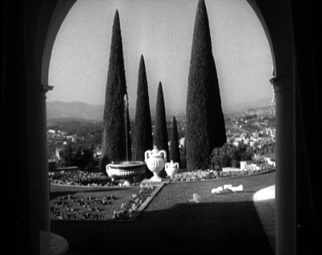
Unknown 4 – John Drake (Patrick McGoohan) follows Basil Jordan (Denholm Elliot) to his meeting with Zephos (Michael Peake). Later Basil persuades Drake to join him and Claudia Jordan (Moira Lister ) for their hunting party. When Drake spots Zephos amongst the guests he realises his cover has been blown.
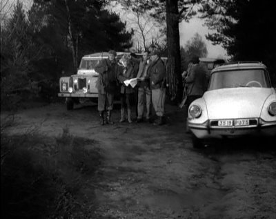
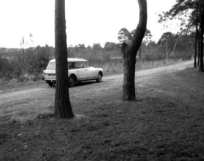
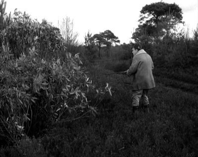
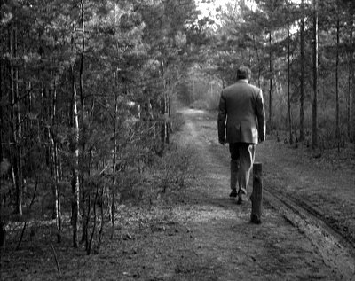
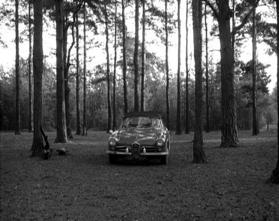
DANGER
MAN: Two
Birds with One Bullet (Peter Yates: 1965)
Unknowns 1 to 3
– John Drake has been
installed in a British Colony to investigate the methods and intentions
of the
nationalists led by Doctor Shargis.
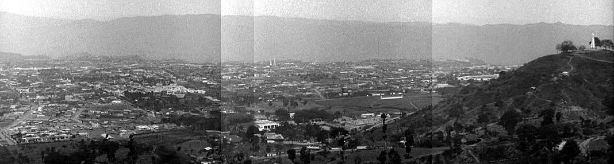
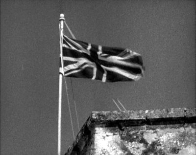
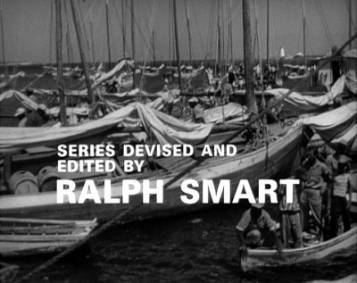
San Vicente de Chucurí, Santander, Colombia – John Drake has been installed in a British Colony to investigate the methods and intentions of the nationalists led by Doctor Shargis.
(Identified by Sietse Postma, February 2025)

Nassau
Harbour, Bahamas – John Drake has been
installed in a British Colony to investigate the methods and intentions
of the
nationalists led by Doctor Shargis.
(Identified by Sietse
Postma, January 2024)
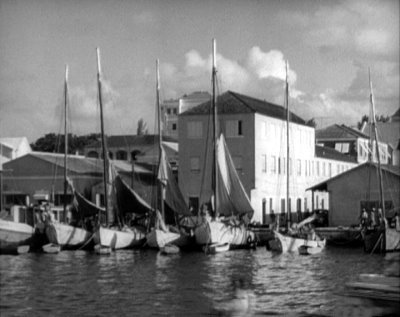
Unknown 4 – Drake picked up from prison and taken to militia training school. Drake offers to drive Doctor Shargis home, but the car is sabotaged. Drake is able to avoid a serious crash.
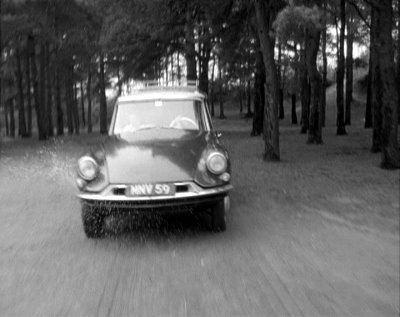
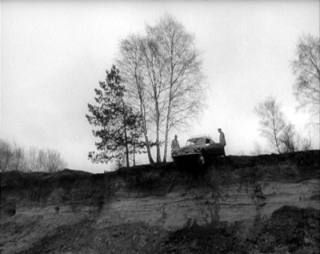
Also Black Park footage?
Plaza de Mayo, Buenos Aires, Argentina – Riots after assassination of Doctor Shargis (stock fooatge of the coup d'état on 4 June 1943).

Bogota, Columbia – Riots after assassination of Doctor Shargis (1948 Bogota Riots After Assassination of Jorge Eliécer Gaitán).*
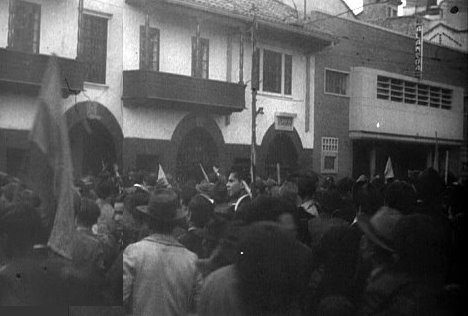
Piazza San Domenico, Palermo, Sicily, Italy – Speech to Nationalist crowds about the succession to the assassinated Doctor Shargis (Piazza San Domenico, Palermo).

Think you know a spot? Need a bigger image? Email me.
< Previous | Index | Avengerland | Next >
Copyright © 2003 Anthony R. McKay